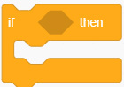
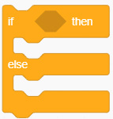

Figure 10: The if ( ) then and if ( ) then else blocks
For a program to make a decision, it needs prior information. This information is known as a condition for the decision control structure and it is placed in the hexagon found at the upper part of the block.
Activity 8: Using the decision control structure
Create a program that makes the sprite move from right to left. If it touches the edge of the stage, it will change its colour, turn 180 degrees and then continue moving.
Steps
- 1. From the Events block, choose the when green flag clicked.
- 2. From the Motion block choose set rotation style ( ). Set the rotation style to left-right.
- 3. From the Control block, choose the forever block. Inside it, add a 10 steps motion block followed by an if ( ) then block.
- 4. Choose the touching block from the Sensing blocks and set it to the edge. Thereafter, place it inside the condition area of the if ( ) then block in the script
- 5. Inside the body of the if ( ) then add the change colour effect by (19) and the turn (180) degrees blocks.
- 6. Start the program by clicking/pressing the green flag. Observe Figure 11.